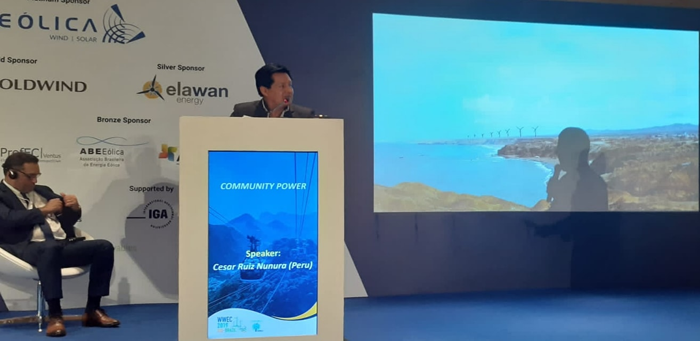
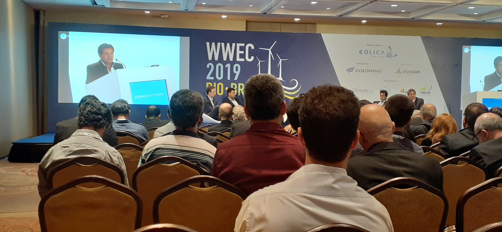
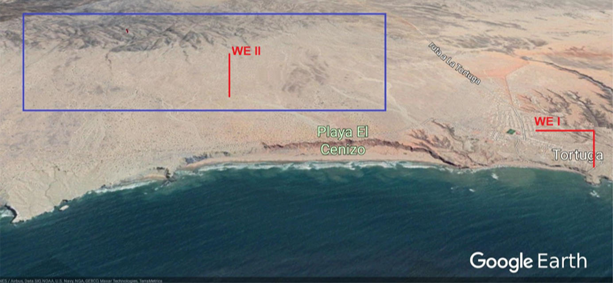

Antecedentes
En la Conferencia Mundial de Energia de Viento que se realizo
en Bonn-Alemania en el 2012, tuvimos la oportunidad de presentar el potencial para una
iniciativa comunitaria de energia de viento en la comunidad de la Tortuga en Peru. Despues
de varios anos, hemos podido completer la etapa inicial de esta iniciativa.
Hubieramos querido avanzar mas pero hemos tenido que vencer severos obstaculos

Obstaculos del Proyecto -Lecciones aprendidas
• Ausencia de financiamiento.
• Aunsencia de alianzas estrategicas.
• Ausencia de apoyo comunitario inicial.
• Ausencia de conocimiento de este tipo de iniciativa y de tecnologia de parte de la comunidad local.
• Ausencia de contratistas que que puedan instalar infraestructura requerida.
• Aislamiento del lugar.

Potencial de la IEC La Tortuga – Aportes de la comunidad local.
•Tierra – La municipalidad de la Tortuga tiene la posibilidad de concesionar el uso de tierra para el uso de una granja eolica comunitaria.
•Velocidad del viento- 17.5 m/s promedio annual. Densidad de aire 1.17 kg/m³.
•Energia Solar –5.7 Kilo what hora /m² promedio diario
•Licencia Social–Aceptación, participación y representación comunitaria en el proyecto.
•Mediciones y verificaciones de la data atmosferica.
 Iniciativa de energia Comunitaria Caso: La Tortuga-Peru WWEC 2019
Iniciativa de energia Comunitaria Caso: La Tortuga-Peru WWEC 2019